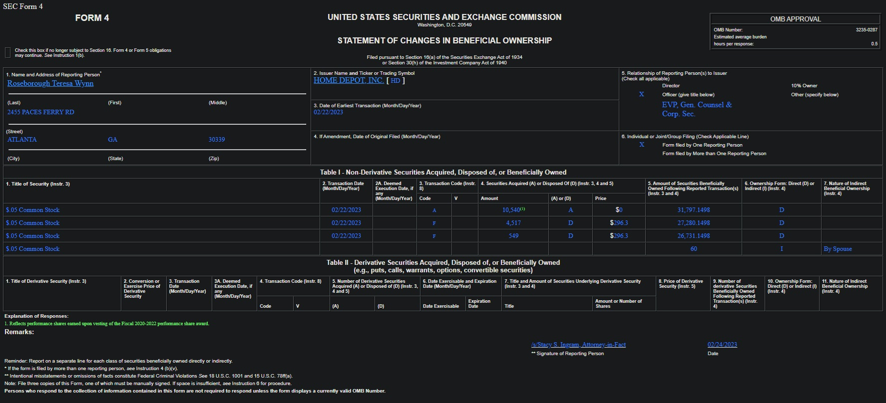
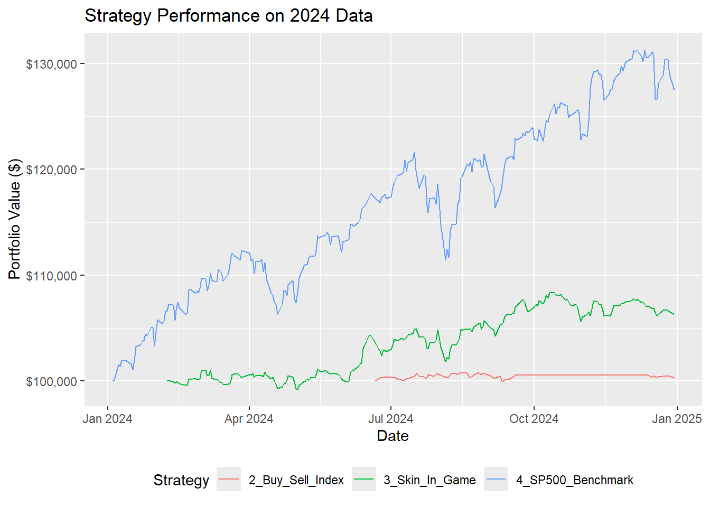

library(httr)
library(rvest)
library(jsonlite)
library(quantmod)
library(dplyr)
library(tidyr)
library(lubridate)
library(stringr)
library(runner)
library(ggplot2)
library(purrr)EDGAR Trading Strategies
Extracting and parsing data about insider trades on Forms 3, 4, and 5 from the SEC’s free public EDGAR API and testing a few trading strategies
Intro/Overview
Forms 3, 4, and 5 are critical filings with the U.S. Securities and Exchange Commission (SEC) that provide transparency into insider trading activities. They are mandated by Section 16 of the Securities Exchange Act of 1934 and apply to “insiders” of a company. For the purpose of these forms, an “insider” generally refers to:
Officers: Executive officers (e.g., CEO, CFO, COO, General Counsel).
Directors: Members of the company’s board of directors.
Beneficial Owners: Any person or entity who owns more than 10% of any class of a company’s equity securities.
These individuals have access to non-public information about the company, and the purpose of these filings is to prevent unfair use of that information and ensure market fairness. As such, information about the way they trade may provide valuable signals regarding future price movements of the relevant stock, if it is not already priced in by the time an individual trader can access it.
Setting Up
Loading Libraries
Loading S&P500 Price Data
For this example I will pick a few tickers from the S&P500 to work with. There is no strong reason to focus on these specific companies; membership in the S&P500 is just serving as a proxy for sufficient transaction volume for trading. Focusing on individual tradeable companies is important because getting the Form 3, 4, and 5 data from EDGAR is done at the company level, so the data collection is simplest when identifying specific companies of interest in advance.
The quantmod package contains a function called getSymbols() which lets the user pick one or more stock symbols and specify a time period, and then it downloads the relevant data from Yahoo Finance.
# pick a few tickers and download the data from Yahoo Finance
symbols_vec = c("SPY","NVDA","MSFT","AMZN","AAPL","META","AVGO","GOOG","GOOGL","TSLA","JPM","WMT","V","LLY","ORCL","NFLX","MA","XOM","COST","PG","JNJ","HD","BAC")
getSymbols(symbols_vec, from = "2023-01-01", to = "2024-12-31")
# combine adjusted close prices into one dataset
# a bit weird because quantmod likes to return each ticker
# as a new object in the environment
df_prices = data.frame()
for(i in 1:length(symbols_vec)){
# keep only the adjusted returns data
cmd = paste0(symbols_vec[i], "=", symbols_vec[i], "[,grepl('Adjusted',colnames(", symbols_vec[i], "))]")
eval(parse(text = cmd))
# combine into one data frame
if(i == 1){
cmd = paste0("df_prices = ", symbols_vec[i])
eval(parse(text = cmd))
}else{
cmd = paste0("df_prices = merge(df_prices, ", symbols_vec[i], ")")
eval(parse(text = cmd))
}
}
# Clean up column names
colnames(df_prices) = gsub(".Adjusted", "", colnames(df_prices))
# Add dates to adjusted close prices
df_prices = data.frame(date = index(df_prices), df_prices)
# Write to file to avoid pulling every time
write.csv(df_prices, "df_prices.csv", row.names = FALSE)
# process price data
price_data_processed = df_prices %>%
mutate(date = ymd(date)) %>%
pivot_longer(-date, names_to = "ticker", values_to = "close_price") %>%
filter(!is.na(close_price) & close_price > 0)Here is how the data looks after this initial cleanup.
knitr::kable(head(df_prices))| date | SPY | NVDA | MSFT | AMZN | AAPL | META | AVGO | GOOG | GOOGL | TSLA | JPM | WMT | V | LLY | ORCL | NFLX | MA | XOM | COST | PG | JNJ | HD | BAC |
|---|---|---|---|---|---|---|---|---|---|---|---|---|---|---|---|---|---|---|---|---|---|---|---|
| 2023-01-03 | 368.1687 | 14.30229 | 234.8089 | 85.82 | 123.4706 | 124.0594 | 53.11102 | 89.16996 | 88.58871 | 108.10 | 126.1023 | 46.34946 | 203.5143 | 357.7304 | 80.98023 | 294.95 | 341.6681 | 97.81239 | 436.2654 | 142.4647 | 164.8901 | 296.2758 | 31.30841 |
| 2023-01-04 | 371.0110 | 14.73590 | 224.5377 | 85.14 | 124.7441 | 126.6751 | 53.75969 | 88.18581 | 87.55491 | 113.64 | 127.2782 | 46.40110 | 208.6367 | 355.8781 | 81.71534 | 309.41 | 349.8946 | 98.09706 | 439.4222 | 143.0851 | 166.6853 | 299.8584 | 31.89703 |
| 2023-01-05 | 366.7765 | 14.25233 | 217.8829 | 83.12 | 123.4212 | 126.2474 | 53.25879 | 86.25726 | 85.68610 | 110.34 | 127.2500 | 46.24295 | 207.1648 | 351.7812 | 81.55091 | 309.70 | 346.5645 | 100.29190 | 433.2914 | 141.3086 | 165.4546 | 295.8632 | 31.83162 |
| 2023-01-06 | 375.1874 | 14.84580 | 220.4507 | 86.08 | 127.9624 | 129.3106 | 56.46476 | 87.63905 | 86.81931 | 113.06 | 129.6850 | 47.37585 | 213.6807 | 355.7212 | 82.85674 | 315.55 | 362.8172 | 101.50410 | 464.7447 | 144.6735 | 166.7963 | 297.7951 | 32.14929 |
| 2023-01-09 | 374.9748 | 15.61412 | 222.5971 | 87.36 | 128.4856 | 128.7636 | 55.35740 | 88.27527 | 87.49525 | 119.77 | 129.1492 | 46.78520 | 214.5148 | 342.8719 | 83.90530 | 315.17 | 366.0736 | 99.61231 | 460.7793 | 142.9064 | 162.4749 | 298.0577 | 31.66345 |
| 2023-01-10 | 377.6044 | 15.89487 | 224.2926 | 89.87 | 129.0582 | 132.2644 | 55.16933 | 88.71268 | 87.89288 | 118.85 | 130.3056 | 46.75615 | 216.9582 | 345.7339 | 83.98299 | 327.54 | 366.1131 | 101.10004 | 463.3298 | 142.7655 | 162.0863 | 300.7024 | 31.87834 |
EDGAR Data
Accessing the EDGAR data through the free public API doesn’t require any setup. There is no need to register for an API key. As long as you provide a user agent in your request, you can get responses immediately. The tricky part is parsing the responses to get the data you want. The data for Forms 3, 4, 5 are .xml file types, but the content is html which is rendered in the browser. It makes it easy to review any individual form in the browser, but the formatting is not friendly for a script to parse. Here is a screenshot of a Form 4 filing as rendered in the browser as an example of what needs to be parsed:

Data Collection Functions
The first utility function gets the mapping from the EDGAR database of company ticker to Central Index Key (CIK), which is the unique 10-digit identifier assigned by the SEC to every individual, company, filing agent, or foreign government that files disclosure documents with the SEC. We need the CIK and not the ticker to find the correct information in EDGAR.
The second function uses the CIK we identified for a given ticker and finds all forms filed for that CIK, then filters the list to just the forms of interest (Forms 3, 4, 5). There are more forms available, but those are not of interest for this project.
The third function loops through the Form 3, 4, and 5 filings identified by the second function and tries to parse out the relevant information about the insider and the transactions they are reporting. This one is the most problematic because the forms are not identical and the html content is structured to be easy for a human to read in a browser but not for a computer to parse.
USER_AGENT = "Your Name YourEmail@example.com" # Required by EDGAR API
BASE_EDGAR_URL = "https://www.sec.gov/Archives/edgar/data/"
# Delay between API requests to respect rate limits (adjust as needed)
REQUEST_DELAY_SEC = 1 # 1 request per second
# Function to get CIK identifier from EDGAR to match with tickers
get_cik_from_edgar = function() {
cat(paste("Fetching CIK table from EDGAR\n"))
search_url = paste0("https://www.sec.gov/files/company_tickers.json")
response = GET(search_url, add_headers(`User-Agent` = USER_AGENT))
Sys.sleep(REQUEST_DELAY_SEC) # Respect rate limit
if (http_error(response)) {
warning(paste("Failed to retrieve ticker data for CIK lookup. Status:", status_code(response)))
return(NULL)
}
content = content(response, "text", encoding = "UTF-8")
ticker_data = fromJSON(content)
# Bind CIK information to data frame for output
cik_entries = do.call('rbind', lapply(ticker_data, function(x){as.data.frame(x)}))
cik_entries$cik_str = str_pad(cik_entries$cik_str, width = 10, pad = "0")
return(cik_entries)
}
# Function to get recent filings for a CIK (using the company facts API for faster index lookup)
get_recent_filings = function(cik, form_types = c("3", "4", "5"), start_date, end_date) {
cat(paste("Fetching filings for CIK", cik, "between", start_date, "and", end_date, "...\n"))
company_facts_url = paste0("https://data.sec.gov/submissions/CIK", cik, ".json")
response = GET(company_facts_url, add_headers(`User-Agent` = USER_AGENT))
Sys.sleep(REQUEST_DELAY_SEC) # Respect rate limit
if (http_error(response)) {
warning(paste("Failed to retrieve company facts for CIK", cik, ". Status:", status_code(response)))
return(data.frame())
}
content = content(response, "text", encoding = "UTF-8")
company_data = fromJSON(content)
filings = company_data$filings$recent
filings = as.data.frame(filings) # Convert list to data.frame
if (is.null(filings) || nrow(filings) == 0) {
return(data.frame())
}
# Filter by form type and date
filtered_filings = filings %>%
filter(form %in% form_types) %>%
mutate(filingDate = ymd(filingDate)) %>%
filter(filingDate >= start_date & filingDate <= end_date)
if (nrow(filtered_filings) == 0) {
cat("No relevant filings found for this CIK in the specified period.\n")
return(data.frame())
}
# Construct full URL to the XML document for parsing
# The primary document is usually the .xml file within the submission folder
# Path is typically /Archives/edgar/data/[CIK without leading zeros]/[accessionNumber without dashes]/[fileName]
# For Form 3/4/5, fileName is often [ticker]-[date].xml or [CIK]-[date].xml, or just ownership.xml
# This part is tricky and might need refinement based on actual filing structures.
filtered_filings = filtered_filings %>%
mutate(
accessionNumber_clean = str_replace_all(accessionNumber, "-", ""),
xml_url = paste0(BASE_EDGAR_URL,
str_remove(cik, "^0+"), "/",
accessionNumber_clean, "/",
primaryDocument)
)
return(filtered_filings)
}
# Function to parse individual Form 3, 4, or 5 HTML filings (even if .xml extension)
parse_form_html = function(html_url) {
cat(paste("Parsing HTML from:", html_url, "...\n"))
response = GET(html_url, add_headers(`User-Agent` = USER_AGENT))
Sys.sleep(REQUEST_DELAY_SEC) # Respect rate limit
if (http_error(response)) {
warning(paste("Failed to retrieve HTML from", html_url, ". Status:", status_code(response)))
return(NULL)
}
html_content = content(response, "text", encoding = "UTF-8")
# Use tryCatch for robust parsing with rvest::read_html
parsed_html = tryCatch({
read_html(html_content)
}, error = function(e) {
warning(paste("Error parsing HTML from", html_url, ":", e$message))
return(NULL)
})
if (is.null(parsed_html)) {
return(NULL)
}
# --- Extract relevant information using CSS selectors / XPath based on the provided HTML ---
# Reporting Owner Information
# The reporting person's name is in an <a> tag within a table, followed by a <hr>
rpt_owner_name <- parsed_html %>%
html_element(xpath = "//table[contains(., 'Name and Address of Reporting Person')]/tr/td/table/tr/td/a") %>%
html_text(trim = TRUE)
# The CIK for the reporting person is in the href attribute of the <a> tag
rpt_owner_cik <- parsed_html %>%
html_element(xpath = "//table[contains(., 'Name and Address of Reporting Person')]/tr/td/table/tr/td/a") %>%
html_attr("href") %>%
str_extract("CIK=([0-9]+)") %>%
str_replace("CIK=", "")
# Issuer Information
# Issuer name and ticker are in a specific table cell
issuer_info_node <- parsed_html %>%
html_element(xpath = "//td[contains(., 'Issuer Name')]/a")
issuer_name <- issuer_info_node %>% html_text(trim = TRUE)
issuer_cik <- issuer_info_node %>%
html_attr("href") %>%
str_extract("CIK=([0-9]+)") %>%
str_replace("CIK=", "")
issuer_ticker <- parsed_html %>%
html_element(xpath = "//td[contains(., 'Issuer Name')]/span[@class='FormData']") %>%
html_text(trim = TRUE)
# Relationship of Reporting Person(s) to Issuer (Checkboxes)
# Look for "X" in the sibling <td> of the labels
is_director <- parsed_html %>% html_element(xpath = "//td[text()='Director']/preceding-sibling::td[1]") %>% html_text(trim = TRUE) == "X"
is_officer <- parsed_html %>% html_element(xpath = "//td[text()='Officer (give title below)']/preceding-sibling::td[1]") %>% html_text(trim = TRUE) == "X"
is_ten_percent_owner <- parsed_html %>% html_element(xpath = "//td[text()='10% Owner']/preceding-sibling::td[1]") %>% html_text(trim = TRUE) == "X"
is_other <- parsed_html %>% html_element(xpath = "//td[text()='Other (specify below)']/preceding-sibling::td[1]") %>% html_text(trim = TRUE) == "X"
# Officer Title (if applicable)
rpt_owner_title <- parsed_html %>%
html_element(xpath = "//td[text()='Officer (give title below)']/following-sibling::td[1]") %>%
html_text(trim = TRUE)
if (is_officer && rpt_owner_title == "") {
# Sometimes title is next to "Officer" label itself if not a separate cell
rpt_owner_title <- parsed_html %>%
html_element(xpath = "//td[text()='Officer (give title below)']/parent::tr/following-sibling::tr/td[@style='color: blue']") %>% # Check the blue text specifically
html_text(trim = TRUE)
}
# Clean up if no title found or if it's just whitespace
if (is.null(rpt_owner_title) || trimws(rpt_owner_title) == "") {
rpt_owner_title <- NA
}
# --- Non-Derivative Transactions (Table I) ---
transactions_list = list()
# Identify "Table I"
table_i_node <- parsed_html %>%
html_element(xpath = "//table[.//b[contains(text(), 'Table I - Non-Derivative Securities')]]")
if (!is.null(table_i_node)) {
# Extract the table content as a data frame.
# header = TRUE tells html_table to use the first meaningful rows as headers.
# fill = TRUE handles cases with merged cells or inconsistent row lengths by filling with NA.
# trim = TRUE removes leading/trailing whitespace from cell values.
# convert = FALSE to avoid automatic type conversion, we'll do it manually.
non_derivative_data <- tryCatch({
html_table(table_i_node, header = TRUE, fill = TRUE, trim = TRUE, convert = FALSE)
}, error = function(e) {
warning(paste("Error extracting Table I:", e$message))
return(NULL)
})
if (!is.null(non_derivative_data) && nrow(non_derivative_data) > 0) {
# The table has a complex header with merged cells.
# html_table with header=TRUE will likely combine the two header rows.
# We need to manually fix column names and select relevant columns.
# This is where the forms start to differ
# depending whether this is Form 3, 4, or 5
# this table will have different columns
# we will start with Table 4 as it is the most common and has the most columns
if (parsed_html %>% html_element(xpath = "//body") %>% html_text(trim = TRUE) %>% substr(1,10) == "SEC Form 4") {
# Rename columns to our desired standard names
colnames(non_derivative_data) <- c(
"securityTitle",
"transactionDate",
"deemedExecutionDate", # Keep this for now, though not always used
"transactionCode",
"vFlag",
"sharesAcquiredDisposedAmount",
"acquiredDisposedCode",
"transactionPricePerShare",
"postTransactionAmount",
"directIndirectOwnership",
"natureOfOwnership"
)
# Remove header rows that might be duplicated or empty due to `html_table` logic
# and remove rows that are entirely NA (often occur due to merged cells or empty rows)
non_derivative_data <- non_derivative_data %>%
filter(!if_all(everything(), is.na)) %>% # Remove rows with all NAs
filter(!grepl("Title of Security", securityTitle, ignore.case = TRUE))
# Process each row as a transaction or holding
if (nrow(non_derivative_data) > 0) {
for (i in 1:nrow(non_derivative_data)) {
row_data <- non_derivative_data[i, ]
# Determine if it's a transaction (has a transaction date/code) or a holding
is_transaction = !is.na(row_data$transactionDate) && trimws(row_data$transactionDate) != "" &&
!is.na(row_data$transactionCode) && trimws(row_data$transactionCode) != ""
temp_df <- data.frame(
transactionType = ifelse(is_transaction, "Transaction", "Holding"),
securityTitle = row_data$securityTitle,
transactionDate = ifelse(is_transaction, as.character(mdy(row_data$transactionDate)), NA),
transactionFormType = NA, # Not explicitly available in this table
transactionCode = row_data$transactionCode,
equitySwapInvolved = NA, # Not explicitly available in this table
sharesAcquiredDisposed = NA,
transactionPricePerShare = NA,
directIndirectOwnership = row_data$directIndirectOwnership,
natureOfOwnership = row_data$natureOfOwnership,
postTransactionAmount = NA,
stringsAsFactors = FALSE
)
# Populate transaction specific fields only if it's a transaction
if (is_transaction) {
# Handle shares acquired/disposed. The code (A)/(D) is in `acquiredDisposedCode`
# And the amount is in `sharesAcquiredDisposedAmount`
shares_val <- as.numeric(gsub(",|\\([^)]*\\)", "", row_data$sharesAcquiredDisposedAmount))
if (row_data$acquiredDisposedCode == "D") {
shares_val <- -abs(shares_val) # Represent disposal as negative
}
temp_df$sharesAcquiredDisposed <- shares_val
price_val <- as.numeric(gsub("[$,]|\\([^)]*\\)", "", row_data$transactionPricePerShare))
temp_df$transactionPricePerShare <- price_val
}
# Post-transaction amount is relevant for both transactions and holdings
temp_df$postTransactionAmount <- as.numeric(gsub(",|\\([^)]*\\)", "", row_data$postTransactionAmount))
transactions_list[[length(transactions_list) + 1]] <- temp_df
}
}
} else if (parsed_html %>% html_element(xpath = "//body") %>% html_text(trim = TRUE) %>% substr(1,10) == "SEC Form 3") {
# Form 3 table is a lot like Form 4, which is why the parsing was identical up to here
# but it doesn't contain transactions, just beneficial ownership information
# so certain columns populated in Form 4 will always be NA here
# Rename columns to our desired standard names
colnames(non_derivative_data) <- c(
"securityTitle",
"postTransactionAmount",
"directIndirectOwnership",
"natureOfOwnership"
)
# Remove header rows that might be duplicated or empty due to `html_table` logic
# and remove rows that are entirely NA (often occur due to merged cells or empty rows)
non_derivative_data <- non_derivative_data %>%
filter(!if_all(everything(), is.na)) %>% # Remove rows with all NAs
filter(!grepl("Title of Security", securityTitle, ignore.case = TRUE))
# Process each row as a holding, no transactions in Form 3
if (nrow(non_derivative_data) > 0) {
for (i in 1:nrow(non_derivative_data)) {
row_data <- non_derivative_data[i, ]
temp_df <- data.frame(
transactionType = "Holding",
securityTitle = row_data$securityTitle,
transactionDate = parsed_html %>% html_element(xpath = "//span[contains(., 'Date of Event Requiring Statement')]/following-sibling::span") %>% html_text(trim = TRUE) %>% mdy() %>% as.character(), # Can interpret date of reportable event as transaction date for holding
transactionFormType = NA, # Not applicable for Form 3
transactionCode = NA, # Not applicable for Form 3
equitySwapInvolved = NA, # Not applicable for Form 3
sharesAcquiredDisposed = NA, # Not applicable for Form 3
transactionPricePerShare = NA, # Not applicable for Form 3
directIndirectOwnership = row_data$directIndirectOwnership,
natureOfOwnership = row_data$natureOfOwnership,
postTransactionAmount = as.numeric(gsub(",|\\([^)]*\\)", "", row_data$postTransactionAmount)),
stringsAsFactors = FALSE
)
transactions_list[[length(transactions_list) + 1]] <- temp_df
}
}
} else if (parsed_html %>% html_element(xpath = "//body") %>% html_text(trim = TRUE) %>% substr(1,10) == "SEC Form 5") {
# Form 5 table is a lot like Form 4, but for some reason parses as having 16 columns
# even though it only has 10, so we need to drop the last 6 columns
# also, one of the columns from the table in Form 4 is just not present here
# Only keep first 10 columns, many duplicate columns are introduced
# at the end for some reason
non_derivative_data = non_derivative_data[,1:10]
# Rename columns to our desired standard names
colnames(non_derivative_data) <- c(
"securityTitle",
"transactionDate",
"deemedExecutionDate",
"transactionCode",
# "vFlag", this is the one dropped in Form 5
"sharesAcquiredDisposedAmount",
"acquiredDisposedCode",
"transactionPricePerShare",
"postTransactionAmount",
"directIndirectOwnership",
"natureOfOwnership"
)
# Remove header rows that might be duplicated or empty due to `html_table` logic
# and remove rows that are entirely NA (often occur due to merged cells or empty rows)
non_derivative_data <- non_derivative_data %>%
filter(!if_all(everything(), is.na)) %>% # Remove rows with all NAs
filter(!grepl("Title of Security", securityTitle, ignore.case = TRUE))
# Process each row as a transaction or holding
if (nrow(non_derivative_data) > 0) {
for (i in 1:nrow(non_derivative_data)) {
row_data <- non_derivative_data[i, ]
# Determine if it's a transaction (has a transaction date/code) or a holding
is_transaction = !is.na(row_data$transactionDate) && trimws(row_data$transactionDate) != "" &&
!is.na(row_data$transactionCode) && trimws(row_data$transactionCode) != ""
temp_df <- data.frame(
transactionType = ifelse(is_transaction, "Transaction", "Holding"),
securityTitle = row_data$securityTitle,
transactionDate = ifelse(is_transaction, as.character(mdy(row_data$transactionDate)), NA),
transactionFormType = NA, # Not explicitly available in this table
transactionCode = row_data$transactionCode,
equitySwapInvolved = NA, # Not explicitly available in this table
sharesAcquiredDisposed = NA,
transactionPricePerShare = NA,
directIndirectOwnership = row_data$directIndirectOwnership,
natureOfOwnership = row_data$natureOfOwnership,
postTransactionAmount = NA,
stringsAsFactors = FALSE
)
# Populate transaction specific fields only if it's a transaction
if (is_transaction) {
# Handle shares acquired/disposed. The code (A)/(D) is in `acquiredDisposedCode`
# And the amount is in `sharesAcquiredDisposedAmount`
shares_val <- as.numeric(gsub(",|\\([^)]*\\)", "", row_data$sharesAcquiredDisposedAmount))
if (row_data$acquiredDisposedCode == "D") {
shares_val <- -abs(shares_val) # Represent disposal as negative
}
temp_df$sharesAcquiredDisposed <- shares_val
price_val <- as.numeric(gsub("[$,]|\\([^)]*\\)", "", row_data$transactionPricePerShare))
temp_df$transactionPricePerShare <- price_val
}
# Post-transaction amount is relevant for both transactions and holdings
temp_df$postTransactionAmount <- as.numeric(gsub(",|\\([^)]*\\)", "", row_data$postTransactionAmount))
transactions_list[[length(transactions_list) + 1]] <- temp_df
}
}
} else {
warning(paste("Body in", html_url, "does not start with text SEC Form 3, 4, or 5."))
}
}
} else {
warning(paste("Table I (Non-Derivative Securities) not found in", html_url))
}
# --- Table II - Derivative Securities (Optional) ---
# This section would follow a similar logic to Table I if you need to extract derivative transactions.
# The XPath and column mapping would need to be adjusted for the derivative table's specific structure.
if (length(transactions_list) == 0) {
warning(paste("No identifiable non-derivative transaction or holding data found in", html_url))
return(NULL) # No transactions found in this filing
}
transactions_df = bind_rows(transactions_list) %>%
# Ensure numeric columns are actually numeric
mutate(across(c(sharesAcquiredDisposed, transactionPricePerShare, postTransactionAmount), as.numeric))
# Add common filing details to each transaction row
transactions_df$issuerName = issuer_name
transactions_df$issuerCik = issuer_cik
transactions_df$issuerTicker = issuer_ticker
transactions_df$rptOwnerName = rpt_owner_name
transactions_df$rptOwnerCik = rpt_owner_cik
transactions_df$rptOfficerTitle = rpt_owner_title
transactions_df$isDirector = is_director
transactions_df$isOfficer = is_officer
transactions_df$isTenPercentOwner = is_ten_percent_owner
transactions_df$isOther = is_other
transactions_df$filingUrl = html_url
return(transactions_df)
}Data Collection Main Loop
Here we put together the utility functions above into a loop to collect all the desired data. We start with a list of tickers and a date range. For each ticker, we identify its associated CIK, get the list of related Form 3, 4, and 5 filings within the chosen date range, and then parse each filing into a data frame. At the end we combine all the parsed filing information into one large data frame for analysis.
# Get the mapping of tickers to CIK from EDGAR
cik_table = get_cik_from_edgar()
# Collect EDGAR Form 3, 4, 5 data over the years 2023-2024
tickers = symbols_vec[-1]
start_date = ymd("2023-01-01")
end_date = ymd("2024-12-31")
all_insider_data = list()
form_types_to_collect = c("3", "4", "5")
for (ticker in tickers) {
cik = cik_table[cik_table$ticker == ticker,]
if (nrow(cik) == 0) {
next # Skip if CIK not found
}
cik = cik$cik_str[1]
filings = get_recent_filings(cik, form_types_to_collect, start_date, end_date)
if (nrow(filings) == 0) {
next # Skip if no relevant filings
}
for (i in 1:nrow(filings)) {
filing_url = filings$xml_url[i]
parsed_data = parse_form_html(filing_url)
if (!is.null(parsed_data)) {
parsed_data$filingDate = filings$filingDate[i]
parsed_data$formType = filings$form[i]
all_insider_data[[length(all_insider_data) + 1]] = parsed_data
}
}
}
raw_insider_data = bind_rows(all_insider_data)
# Save to disk to avoid re-downloading during development
saveRDS(raw_insider_data, "raw_insider_data.rds")Spot Check
Let’s take a quick look at the data that was collected.
# Print count of each type of form
# each filing can consist of multiple holding
# and transaction records, so count by unique filing
raw_insider_data %>%
filter(!duplicated(filingUrl)) %>%
group_by(formType) %>%
summarise(count = n()) %>%
knitr::kable()| formType | count |
|---|---|
| 3 | 55 |
| 4 | 3461 |
| 5 | 14 |
# Print the first 5 rows for each type of form
raw_insider_data %>%
group_by(formType) %>%
slice_head(n = 5) %>%
knitr::kable()| transactionType | securityTitle | transactionDate | transactionFormType | transactionCode | equitySwapInvolved | sharesAcquiredDisposed | transactionPricePerShare | directIndirectOwnership | natureOfOwnership | postTransactionAmount | issuerName | issuerCik | issuerTicker | rptOwnerName | rptOwnerCik | rptOfficerTitle | isDirector | isOfficer | isTenPercentOwner | isOther | filingUrl | filingDate | formType |
|---|---|---|---|---|---|---|---|---|---|---|---|---|---|---|---|---|---|---|---|---|---|---|---|
| Holding | Common Stock | 2023-07-31 | NA | NA | NA | NA | NA | D | 2614404.00 | Serve Robotics Inc. /DE/ | 0001832483 | SERV | NVIDIA CORP | 0001045810 | NA | FALSE | FALSE | TRUE | FALSE | https://www.sec.gov/Archives/edgar/data/1045810/000104581024000231/xslF345X02/wk-form3_1721337425.xml | 2024-07-18 | 3 | |
| Holding | Common Stock | 2023-12-07 | NA | NA | NA | NA | NA | D | 429.00 | MICROSOFT CORP | 0000789019 | MSFT | Mason Mark | 0001487290 | NA | TRUE | FALSE | FALSE | FALSE | https://www.sec.gov/Archives/edgar/data/789019/000106299323022250/xslF345X02/form3.xml | 2023-12-08 | 3 | |
| Holding | Common Stock | 2023-12-07 | NA | NA | NA | NA | NA | D | 0.00 | MICROSOFT CORP | 0000789019 | MSFT | MacGregor Catherine | 0001415757 | NA | TRUE | FALSE | FALSE | FALSE | https://www.sec.gov/Archives/edgar/data/789019/000106299323022249/xslF345X02/form3.xml | 2023-12-08 | 3 | |
| Holding | Common Stock | 2023-11-29 | NA | NA | NA | NA | NA | D | 49661.81 | MICROSOFT CORP | 0000789019 | MSFT | Numoto Takeshi | 0001899931 | EVP, Chief Marketing Officer | FALSE | TRUE | FALSE | FALSE | https://www.sec.gov/Archives/edgar/data/789019/000106299323021742/xslF345X02/form3.xml | 2023-12-01 | 3 | |
| Holding | Class A Common Stock | 2023-10-13 | NA | NA | NA | NA | NA | I | See Footnote(1) | 12677398.00 | PLAYSTUDIOS, Inc. | 0001823878 | MYPS | MICROSOFT CORP | 0000789019 | NA | FALSE | FALSE | TRUE | FALSE | https://www.sec.gov/Archives/edgar/data/789019/000089924323020428/xslF345X02/doc3.xml | 2023-11-17 | 3 |
| Transaction | Common Stock | 2024-12-18 | NA | G | NA | -385000 | 0.0000 | I | By Trust(4) | 10275333.00 | NVIDIA CORP | 0001045810 | NVDA | STEVENS MARK A | 0001199039 | NA | TRUE | FALSE | FALSE | FALSE | https://www.sec.gov/Archives/edgar/data/1045810/000104581024000337/xslF345X05/wk-form4_1734736726.xml | 2024-12-20 | 4 |
| Holding | Common Stock | NA | NA | NA | NA | NA | I | By the Envy Trust(5) | 16070550.00 | NVIDIA CORP | 0001045810 | NVDA | STEVENS MARK A | 0001199039 | NA | TRUE | FALSE | FALSE | FALSE | https://www.sec.gov/Archives/edgar/data/1045810/000104581024000337/xslF345X05/wk-form4_1734736726.xml | 2024-12-20 | 4 | |
| Holding | Common Stock | NA | NA | NA | NA | NA | D | 11541602.00 | NVIDIA CORP | 0001045810 | NVDA | STEVENS MARK A | 0001199039 | NA | TRUE | FALSE | FALSE | FALSE | https://www.sec.gov/Archives/edgar/data/1045810/000104581024000337/xslF345X05/wk-form4_1734736726.xml | 2024-12-20 | 4 | ||
| Transaction | Common | 2024-12-16 | NA | S | NA | -18591 | 132.6405 | I | By Trust(2) | 29652769.00 | NVIDIA CORP | 0001045810 | NVDA | COXE TENCH | 0001197647 | NA | TRUE | FALSE | FALSE | FALSE | https://www.sec.gov/Archives/edgar/data/1045810/000122520824010914/xslF345X05/doc4.xml | 2024-12-18 | 4 |
| Transaction | Common | 2024-12-16 | NA | S | NA | -244176 | 131.8579 | I | By Trust(2) | 29408593.00 | NVIDIA CORP | 0001045810 | NVDA | COXE TENCH | 0001197647 | NA | TRUE | FALSE | FALSE | FALSE | https://www.sec.gov/Archives/edgar/data/1045810/000122520824010914/xslF345X05/doc4.xml | 2024-12-18 | 4 |
| Transaction | Common Stock | 2024-04-18 | NA | W | NA | 42 | 0.0000 | I | By spouse(1) | 6042.00 | Apple Inc. | 0000320193 | AAPL | WAGNER SUSAN | 0001059235 | NA | TRUE | FALSE | FALSE | FALSE | https://www.sec.gov/Archives/edgar/data/320193/000032019324000102/xslF345X05/wk-form5_1727822122.xml | 2024-10-01 | 5 |
| Holding | Common Stock | NA | NA | NA | NA | NA | D | 60975.00 | Apple Inc. | 0000320193 | AAPL | WAGNER SUSAN | 0001059235 | NA | TRUE | FALSE | FALSE | FALSE | https://www.sec.gov/Archives/edgar/data/320193/000032019324000102/xslF345X05/wk-form5_1727822122.xml | 2024-10-01 | 5 | ||
| Holding | Class C Capital Stock | NA | NA | NA | NA | NA | D | 3480.00 | Alphabet Inc. | 0001652044 | GOOG | CHAVEZ R. MARTIN | 0001157983 | NA | TRUE | FALSE | FALSE | FALSE | https://www.sec.gov/Archives/edgar/data/1652044/000120919124003289/xslF345X05/doc5.xml | 2024-02-13 | 5 | ||
| Holding | Class C Google Stock Units(2) | NA | NA | NA | NA | NA | D | 2486.00 | Alphabet Inc. | 0001652044 | GOOG | CHAVEZ R. MARTIN | 0001157983 | NA | TRUE | FALSE | FALSE | FALSE | https://www.sec.gov/Archives/edgar/data/1652044/000120919124003289/xslF345X05/doc5.xml | 2024-02-13 | 5 | ||
| Holding | Class C Google Stock Units(3) | NA | NA | NA | NA | NA | D | 5699.00 | Alphabet Inc. | 0001652044 | GOOG | CHAVEZ R. MARTIN | 0001157983 | NA | TRUE | FALSE | FALSE | FALSE | https://www.sec.gov/Archives/edgar/data/1652044/000120919124003289/xslF345X05/doc5.xml | 2024-02-13 | 5 |
We can see that the majority of the filings are Form 4 filings, there are only a few Form 3 or 5 filings in this data. If we look at rows 1 and 5 in the Form 3 data we printed out, it is interesting to see that rather than insiders being registered for Nvidia or Microsoft, we are seeing Nvidia and Microsoft acquire a stake of 10% or more in a different company. This is interesting information and might be leveraged for a trading strategy. For example, in recent time periods, companies that Nvidia invests in tend to be favored by market participants when they hear that news. For now, however, we focus on trading the tickers we already specified so these examples will need to be removed from the data.
Trading Strategies
Here are a few ideas for trading strategies that focus on the chosen tickers and leverage this EDGAR data:
- Multiple Bullish Executives: If several different executives choose to purchase the stock within a short enough time window, this may be a good indicator that the stock will do well over the near term.
- Buy/Sell Index of Insider Trades: Keep a running index of the total dollar value of insider buy/sell transactions. Buy when index is bullish (for example, twice as much buy volume as sell volume) or sell when the reverse occurs.
- Skin in the Game: A significant open-market purchase by a newly appointed key executive (like a CEO or CFO) signals strong confidence in the company’s future from the person with the newest top-level perspective. This would leverage the Form 3 data.
Feature Engineering
Here we clean up the EDGAR data a little bit, and then use it to derive the necessary features for each of the three strategies outlines above.
tickers = c("NVDA","MSFT","AMZN","AAPL","META","AVGO","GOOG","GOOGL","TSLA","JPM","WMT","V","LLY","ORCL","NFLX","MA","XOM","COST","PG","JNJ","HD","BAC")
# Preprocess EDGAR Data
edgar_data_processed = raw_insider_data %>%
# remove cases where the company of interest is acquiring a stake in a different company
filter(issuerTicker %in% tickers) %>%
# Calculate transaction value. Handle cases where price is zero or NA.
mutate(transactionValue = ifelse(transactionPricePerShare > 0, abs(sharesAcquiredDisposed * transactionPricePerShare), 0)) %>%
# Select relevant columns
select(
filingDate, formType, issuerCik, issuerTicker, transactionCode, postTransactionAmount,
transactionValue, rptOwnerCik, isDirector, isOfficer, isTenPercentOwner
) %>%
# For simplicity, we'll use the issuerTicker as our main identifier
rename(date = filingDate, ticker = issuerTicker) %>%
filter(!is.na(ticker) & ticker != "")
# Split data into training (2023) and testing (2024) periods
train_start_date = ymd("2023-01-01")
train_end_date = ymd("2023-12-31")
test_start_date = ymd("2024-01-01")
test_end_date = ymd("2024-12-31")
# STRATEGY 1: Multiple Executive Buying
generate_strategy1_signals <- function(data, exec_threshold = 3, window = 30, holding_period = 90, signal_delay = 1) {
signals <- data %>%
filter(transactionCode == 'P' & (isOfficer | isDirector)) %>%
arrange(ticker, date) %>%
group_by(ticker) %>%
mutate(unique_buyers = runner(
x = rptOwnerCik,
k = paste0(window, " days"),
idx = date,
f = function(x) length(unique(x))
)) %>%
ungroup() %>%
filter(unique_buyers >= exec_threshold) %>%
group_by(ticker) %>%
mutate(days_since_last_signal = date - lag(date, default = first(date) - holding_period - 1)) %>%
filter(days_since_last_signal > holding_period) %>%
ungroup() %>%
# UPDATED: Add signal delay for trade execution
transmute(
entry_date = date + days(signal_delay),
ticker = ticker,
signal = "BUY",
exit_date = entry_date + days(holding_period)
)
return(signals)
}
# STRATEGY 2: Insider Buy/Sell Index
generate_strategy2_signals <- function(data, lookback_period = 90, buy_threshold = 2.0, holding_period = 90, signal_delay = 1) {
daily_volumes <- data %>%
filter(transactionCode %in% c('P', 'S') & transactionValue > 0) %>%
group_by(ticker, date, transactionCode) %>%
summarise(totalValue = sum(transactionValue), .groups = 'drop') %>%
tidyr::pivot_wider(names_from = transactionCode, values_from = totalValue, values_fill = 0) %>%
rename(buy_volume = P, sell_volume = S)
index_data <- daily_volumes %>%
arrange(ticker, date) %>%
group_by(ticker) %>%
mutate(
rolling_buy = runner(buy_volume, k = paste0(lookback_period, " days"),
idx = date, f = sum, na_pad = TRUE),
rolling_sell = runner(sell_volume, k = paste0(lookback_period, " days"),
idx = date, f = sum, na_pad = TRUE)
) %>%
mutate(buy_sell_index = ifelse(rolling_sell > 0, rolling_buy / rolling_sell, rolling_buy)) %>%
ungroup() %>%
select(date, ticker, buy_sell_index)
buy_signals <- index_data %>%
filter(buy_sell_index > buy_threshold) %>%
group_by(ticker) %>%
filter(date == min(date)) %>%
ungroup() %>%
# UPDATED: Add signal delay for trade execution
transmute(
entry_date = date + days(signal_delay),
ticker,
signal = "BUY",
exit_date = entry_date + days(holding_period)
)
return(buy_signals)
}
# STRATEGY 3: "Skin in the Game" (Form 3)
generate_strategy3_signals <- function(data, value_threshold = 10000, holding_period = 180, signal_delay = 1) {
signals <- data %>%
filter(formType == '3' & (isOfficer | isDirector)) %>%
filter(postTransactionAmount >= value_threshold) %>%
group_by(ticker) %>%
mutate(days_since_last_signal = date - lag(date, default = first(date) - holding_period - 1)) %>%
filter(days_since_last_signal > holding_period) %>%
ungroup() %>%
# UPDATED: Add signal delay for trade execution
transmute(
entry_date = date + days(signal_delay),
ticker = ticker,
signal = "BUY",
exit_date = entry_date + days(holding_period)
)
return(signals)
}Backtesting Engine
In order to evaluate these strategies, we need to combine the daily price data for our tickers with the entry and exit signals for each of the strategies. This function will handle the mechanics of entering and exiting positions for each of the strategies and keeping track of the portfolio value over time.
run_backtest <- function(signals, price_df, portfolio_alloc = 0.1, initial_capital = 100000) {
# Ensure signals are sorted by entry date
signals <- signals %>% arrange(entry_date)
# Get all relevant dates for the simulation
trade_dates <- unique(c(signals$entry_date, signals$exit_date))
if(length(trade_dates) == 0) return(data.frame(date=as.Date(character()), portfolio_value=numeric()))
all_dates <- price_df %>% filter(date >= min(trade_dates) & date <= max(trade_dates)) %>% pull(date) %>% unique() %>% sort()
if(length(all_dates) == 0) return(data.frame(date=as.Date(character()), portfolio_value=numeric()))
portfolio <- data.frame(date = all_dates, portfolio_value = initial_capital, cash = initial_capital)
active_positions <- data.frame(ticker = character(), purchase_date = as.Date(character()), shares = numeric(), purchase_price = numeric(), exit_date = as.Date(character()))
for (i in 1:length(all_dates)) {
current_date <- all_dates[i]
# Carry over cash from previous day if not the first day
if (i > 1) {
portfolio$cash[i] <- portfolio$cash[i-1]
}
# Exit positions whose exit_date is today or has passed
positions_to_exit <- active_positions %>% filter(exit_date <= current_date)
if (nrow(positions_to_exit) > 0) {
exit_prices <- price_df %>% filter(date == current_date & ticker %in% positions_to_exit$ticker)
if(nrow(exit_prices) > 0){
cash_inflow <- positions_to_exit %>%
left_join(exit_prices, by = "ticker") %>%
summarise(total_inflow = sum(shares * close_price, na.rm = TRUE)) %>%
pull(total_inflow)
portfolio$cash[i] <- portfolio$cash[i] + cash_inflow
active_positions <- anti_join(active_positions, positions_to_exit, by = c("ticker", "purchase_date"))
}
}
# Enter new positions scheduled for today
trades_today <- signals %>% filter(entry_date == current_date)
if (nrow(trades_today) > 0) {
entry_prices <- price_df %>% filter(date == current_date & ticker %in% trades_today$ticker)
if(nrow(entry_prices) > 0){
trades_with_prices <- trades_today %>% left_join(entry_prices, by = "ticker")
for (j in 1:nrow(trades_with_prices)) {
trade <- trades_with_prices[j, ]
trade_cost <- initial_capital * portfolio_alloc
if (portfolio$cash[i] >= trade_cost && !is.na(trade$close_price)) {
portfolio$cash[i] <- portfolio$cash[i] - trade_cost
new_position <- data.frame(
ticker = trade$ticker,
purchase_date = current_date,
shares = trade_cost / trade$close_price,
purchase_price = trade$close_price,
exit_date = trade$exit_date
)
active_positions <- rbind(active_positions, new_position)
}
}
}
}
# Update total portfolio value based on current prices of active positions
if(nrow(active_positions) > 0){
current_prices <- price_df %>% filter(date == current_date & ticker %in% active_positions$ticker)
holdings_value <- active_positions %>%
left_join(current_prices, by = "ticker") %>%
# If price is missing for today (e.g., non-trading day), use last known purchase price
mutate(current_price = ifelse(is.na(close_price), purchase_price, close_price)) %>%
summarise(total_value = sum(shares * current_price)) %>%
pull(total_value)
} else {
holdings_value <- 0
}
portfolio$portfolio_value[i] <- portfolio$cash[i] + holdings_value
}
return(portfolio)
}Hyperparameter Tuning
There are several parameters that we can change for each of the strategies, such as the lookback window, the holding period, etc. We will use the 2023 data as the training data for tuning these parameters to determine the best settings, then evaluate the performance of the strategies under those tuned parameters one the remaining data from 2024.
# Define data for the training period
train_data <- edgar_data_processed %>% filter(date >= train_start_date & date <= train_end_date)
train_prices <- price_data_processed %>% filter(date >= train_start_date & date <= train_end_date)
# Strategy 1 Tuning
s1_params <- expand.grid(
exec_threshold = c(2, 3),
window = c(7, 14, 30),
holding_period = c(60, 90),
signal_delay = c(1, 2, 7)
)
s1_results <- s1_params %>%
mutate(
signals = pmap(list(exec_threshold, window, holding_period, signal_delay), ~generate_strategy1_signals(train_data, ..1, ..2, ..3, ..4)),
backtest = map(signals, ~run_backtest(., train_prices)),
final_value = map_dbl(backtest, ~if(nrow(.) > 0) tail(.$portfolio_value, 1) else 100000)
) %>%
arrange(desc(final_value))
best_s1_params <- s1_results[1, ]
# Print top parameters for Strategy 1
knitr::kable(head(select(s1_results, exec_threshold, window, holding_period, signal_delay, final_value)))| exec_threshold | window | holding_period | signal_delay | final_value |
|---|---|---|---|---|
| 2 | 14 | 90 | 7 | 103809.8 |
| 2 | 30 | 90 | 7 | 103809.8 |
| 2 | 14 | 90 | 2 | 103799.4 |
| 2 | 30 | 90 | 2 | 103799.4 |
| 2 | 14 | 90 | 1 | 103783.5 |
| 2 | 30 | 90 | 1 | 103783.5 |
# Strategy 2 Tuning
s2_params <- expand.grid(
lookback_period = c(7, 30, 60, 90),
buy_threshold = c(2.0, 3.0, 4.0),
holding_period = c(60, 90),
signal_delay = c(1, 2, 7)
)
s2_results <- s2_params %>%
mutate(
signals = pmap(list(lookback_period, buy_threshold, holding_period, signal_delay), ~generate_strategy2_signals(train_data, ..1, ..2, ..3, ..4)),
backtest = map(signals, ~run_backtest(., train_prices)),
final_value = map_dbl(backtest, ~if(nrow(.) > 0) tail(.$portfolio_value, 1) else 100000)
) %>%
arrange(desc(final_value))
best_s2_params <- s2_results[1, ]
# Print top parameters for Strategy 2
knitr::kable(head(select(s2_results, lookback_period, buy_threshold, holding_period, signal_delay, final_value)))| lookback_period | buy_threshold | holding_period | signal_delay | final_value |
|---|---|---|---|---|
| 90 | 2 | 90 | 7 | 103389.0 |
| 90 | 3 | 90 | 7 | 103389.0 |
| 90 | 4 | 90 | 7 | 103389.0 |
| 90 | 2 | 90 | 1 | 103005.3 |
| 90 | 3 | 90 | 1 | 103005.3 |
| 90 | 4 | 90 | 1 | 103005.3 |
# Strategy 3 Tuning
s3_params <- expand.grid(
value_threshold = c(1000, 10000, 100000),
holding_period = c(120, 150, 180),
signal_delay = c(1, 2, 7)
)
s3_results <- s3_params %>%
mutate(
signals = pmap(list(value_threshold, holding_period, signal_delay), ~generate_strategy3_signals(train_data, ..1, ..2, ..3)),
backtest = map(signals, ~run_backtest(., train_prices)),
final_value = map_dbl(backtest, ~if(nrow(.) > 0) tail(.$portfolio_value, 1) else 100000)
) %>%
arrange(desc(final_value))
best_s3_params <- s3_results[1, ]
# Print top parameters for Strategy 3
knitr::kable(head(select(s3_results, value_threshold, holding_period, signal_delay, final_value)))| value_threshold | holding_period | signal_delay | final_value |
|---|---|---|---|
| 1000 | 150 | 7 | 113184.9 |
| 1000 | 180 | 7 | 113030.7 |
| 1000 | 180 | 1 | 111831.8 |
| 1000 | 180 | 2 | 111714.5 |
| 1000 | 150 | 1 | 110623.0 |
| 1000 | 150 | 2 | 110172.4 |
The signal_delay parameter is incorporated into all of these strategies represents the number of days after the form’s filing date that we will trigger the entry flag to enter into the position. This is set to 1 by default since we might not receive data for a form until after the market closes that day. For example, if an insider files Form 4 at end of day January 4, even if we are constantly requesting form data from EDGAR we won’t be able to act on it on January 4 because the market will already be closed that day, so the earliest we can enter the position is January 5.
In this tuning section, we evaluate signal delays of 1, 2, and 7 days as a way to check how robust the strategies are to late entry. Or to say it differently, is the market so sensitive to this information that entering the position as fast as possible is critical to profitability? We can see from the parameter optimization results above that this is not the case. Many of the top parameter combinations have different values for the signal delay parameter, showing that changing the value of this parameter does not result in significant changes in profitability.
Evaluate Performance
Having identified the best hyperparameter settings for each strategy, we can now test the trained strategies over the holdout data from 2024 to see how well they perform. For this evaluation, it is useful to also include the S&P500 index as a benchmark. Even if the strategies perform well, in order to provide meaningful values they should be able to outperform a simple strategy of buying and holding an S&P500 ETF such as SPY over the evaluation period.
# Define data for the testing period
test_data <- edgar_data_processed %>% filter(date >= test_start_date & date <= test_end_date)
test_prices <- price_data_processed %>% filter(date >= test_start_date & date <= test_end_date)
# Evaluate Strategy 1
s1_test_signals <- generate_strategy1_signals(test_data, best_s1_params$exec_threshold, best_s1_params$window, best_s1_params$holding_period)
s1_test_performance <- run_backtest(s1_test_signals, test_prices)
s1_final_value <- tail(s1_test_performance$portfolio_value, 1)
cat(sprintf("\nStrategy 1 Final Portfolio Value (2024): $%.2f\n", s1_final_value))
# Evaluate Strategy 2
s2_test_signals <- generate_strategy2_signals(test_data, best_s2_params$lookback_period, best_s2_params$buy_threshold, holding_period = best_s2_params$holding_period)
s2_test_performance <- run_backtest(s2_test_signals, test_prices)
s2_final_value <- tail(s2_test_performance$portfolio_value, 1)
cat(sprintf("Strategy 2 Final Portfolio Value (2024): $%.2f\n", s2_final_value))Strategy 2 Final Portfolio Value (2024): $100333.70# Evaluate Strategy 3
s3_test_signals <- generate_strategy3_signals(test_data, best_s3_params$value_threshold, best_s3_params$holding_period)
s3_test_performance <- run_backtest(s3_test_signals, test_prices)
s3_final_value <- tail(s3_test_performance$portfolio_value, 1)
cat(sprintf("Strategy 3 Final Portfolio Value (2024): $%.2f\n", s3_final_value))Strategy 3 Final Portfolio Value (2024): $106324.03# Evaluate Strategy 4: Benchmark of just buying and holding SPY
s4_test_signals <- data.frame(entry_date = as.Date("2024-01-04"), ticker = "SPY", signal = "BUY", exit_date = as.Date("2024-12-30"))
s4_test_performance <- run_backtest(s4_test_signals, test_prices, portfolio_alloc = 1)
# Combine performance data for plotting
# s1_test_performance$strategy <- "1_Multiple_Execs"
s2_test_performance$strategy <- "2_Buy_Sell_Index"
s3_test_performance$strategy <- "3_Skin_In_Game"
s4_test_performance$strategy <- "4_SP500_Benchmark"
all_performance <- rbind(s2_test_performance, s3_test_performance, s4_test_performance)
# Plot the portfolio value over time for 2024
all_performance %>% ggplot(aes(x = date, y = portfolio_value, color = strategy)) +
geom_line() +
labs(
title = "Strategy Performance on 2024 Data",
x = "Date",
y = "Portfolio Value ($)",
color = "Strategy"
) +
scale_y_continuous(labels = scales::dollar) +
theme(legend.position = "bottom")
After all that work, it turns out these strategies don’t perform very well. Just buying and holding an ETF tracking the S&P500 index provides way better returns. There are a number of factors contributing to this poor performance, but two major causes stand out:
- Infrequent Signals: Strategy 1 didn’t trigger any entry flags during the test period, so it doesn’t even show up in the final performance evaluation, and even in the training set it only triggered a single entry flag. The other two strategies at least had a few entry flags, but still not that many.
- Portfolio Utilization: Related to the lack of entry flags, the three strategies used naive portfolio weighting to allocate 10% of the portfolio capital to each new position. However, since there were so few entry flags the portfolio capital was never fully invested in any strategy except in the benchmark strategy.
At the end of the day, there doesn’t seem to be sufficient data to support these strategies, at least as currently designed. Some ideas for future work could include trying to leverage the sale transaction data (there are significantly more sales than purchases in this dataset) and buy put options, or try to leverage the Form 3 data where one company acquires a 10% or higher ownership stake in another as a factor that could drive up the price for the company being acquired.
Conclusion
The SEC’s EDGAR database contains many regulatory filings, and this analysis showed how to extract information from a few of them and then leverage that information to create trading strategies. While the final evaluation showed that these particular strategies are not very profitable in their current states, it still lays out a useful framework for acquiring data from the free public EDGAR API and thinking about how to evaluate any subsequent trading strategies.